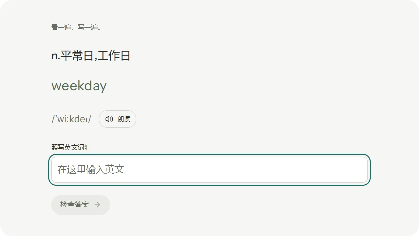
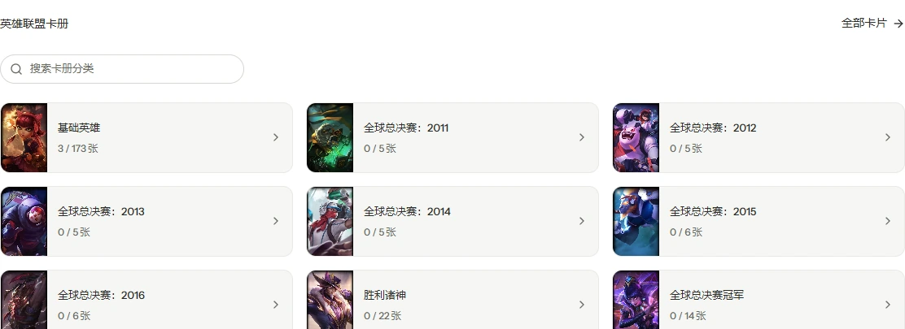

考研词汇支持照写、中译英和英译中练习。有音标就显示，点一下听朗读，学习进度随账号保存。

破晓是一款个人工具集。打卡、背词、听歌、集卡，按需安装插件，把喜欢的日常放在一起。
Windows · Android · Web
同一个账号，接着上次的进度。
考研词汇支持照写、中译英和英译中练习。有音标就显示，点一下听朗读，学习进度随账号保存。

用日光精华单抽或十连，揭晓每一次相遇。在卡册里按宇宙与系列浏览，慢慢留下自己的珍藏。

从插件商店装入需要的工具：签到打卡、拾句、古风音乐、词汇练习与留痕下载。少一点切换，多一点自己的节奏。

把破晓放在桌面或口袋里。
也可以直接打开网页版，随时回来。
旧版 Android 请手动覆盖安装 1.1.1，启用内置更新。
Android 首次安装需允许浏览器安装此应用。